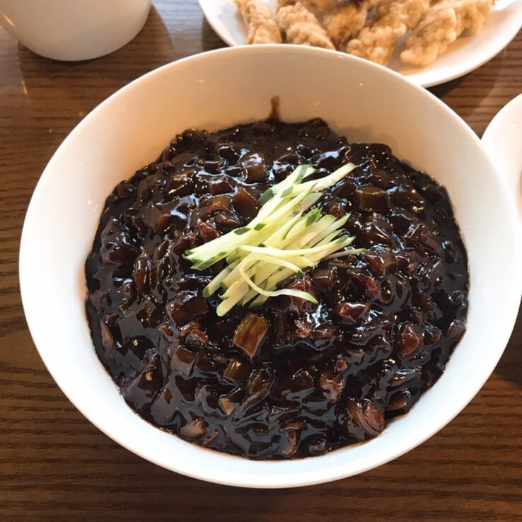
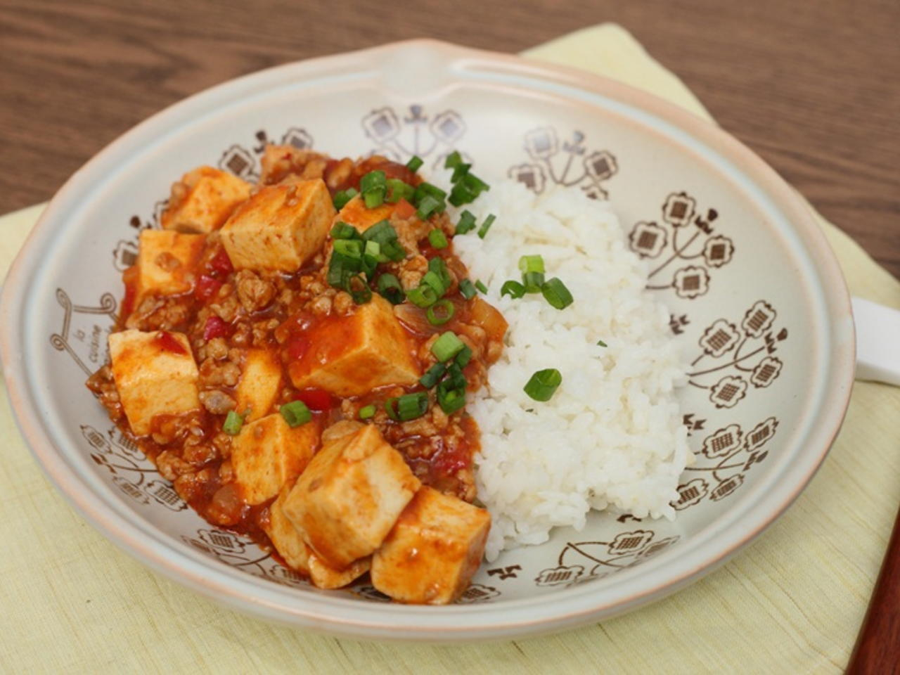
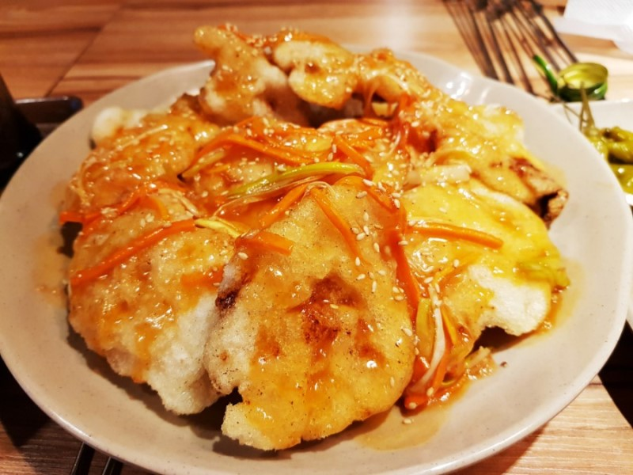
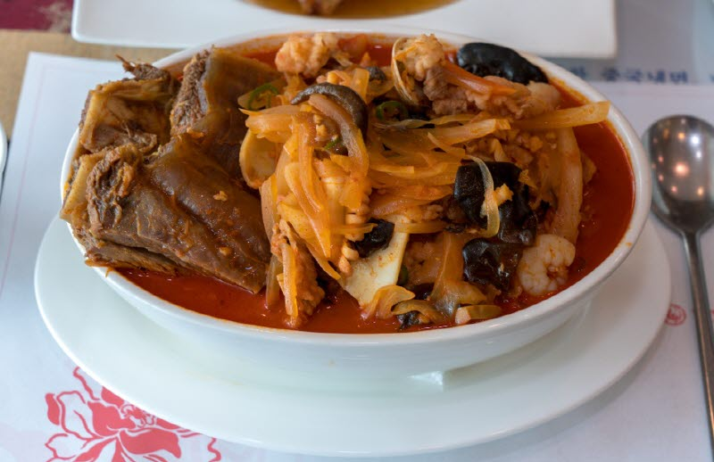
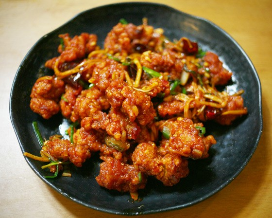

짜장면
재료
중화생면 180g, 돼지고기, 오징어 다리, 알새우, 양파, 애호박, 대파, 오이 다진생강1큰술, 간장2큰술, 식용유2큰술, 춘장2큰술, 황두장 1큰술, 설탕1큰술, 굴소스 1큰술, 감자전분 1큰술, 치킨스톡 1큰술
조리법
- 양파, 돼지고기, 애호박을 깍둑썰기 해주세요.
- 잘게 썬 오징어 다리와 알새우는 데쳐 준비 해주세요.
- 고명으로 올릴 오이를 썰어주세요.
- 달군 팬 위에 기름을 두르고 돼지고기와 다진 생강을 넣고 볶아주세요.
- 고기가 익으면 대파를 넣어 대파의 향을 가미해주세요.
- 간장을 둘러 밑간을 하고 준비해둔 양파, 애호박, 오징어 다리, 알새우를 넣고 볶아주세요.
- 황된장, 치킨스톡, 굴소스를 추가해주세요.
- 춘장, 설탕을 넣어 잘 풀어주다가 끓으면 전분물로 농도를 맞춰주세요
- 삶아진 면에 소스를 부어 완성하세요.

마파두부
재료
· 두부(부침용) 1모, 다진 돼지고기 150g, 양파 1/2개, 홍고추 1개, 청고추 1개, 대파 1/3대, 실파 1대, 고추기름 2큰술, 물 1컵, 참기름 1/2큰술, 맛술 2큰술, 두반장 1+1/2큰술, 간장 1큰술, 고춧가루 1/2큰술, 설탕 1/2큰술, 다진마늘 1/2큰술, 생강가루 1/4작은술, 소금 약간, 후추 약간, 전분가루 2큰술, 물 2큰술
조리법
- 두부는 2센치 크기로 썰어주세요. 끓는 물에 약간의 소금을 넣고, 두부를 넣어 1분 정도 데쳐주세요.
- 양파와 홍고추, 청고추는 잘게 자르고 대파, 실파는 송송 썰어주세요.
- 달군 팬에 고추기름을 두르고 대파, 홍고추, 양파를 넣어 볶아주세요. 다진 돼지고기와 양념재료를 넣고 볶다가 돼지고기가 익으면 청고추를 넣고, 물을 부어 2분 정도 더 끓여주세요.
- 국물이 끓어오르면 두부를 넣고, 녹말물을 조금씩 넣으면서 농도를 걸쭉하게 맞춰 주세요. 참기름을 두르고 불을 꺼주세요.
- 접시에 밥을 담고 마파두부를 올린 후, 송송 썬 실파를 뿌려주세요.

꿔바로우
재료
등심, 찹쌀가루, 전분, 소금, 후추
조리법
- 등심을 살짝 크게 잘라서 소금과 후추로 밑간을 해줍니다.
- 찹쌀가루는 1컵, 전분은 6T 비율로 섞어줍니다.(종이컵과 그냥 일반 밥숟가락 계량으로 하면 된답니다.)
- 물은 일단 반컵을 넣어줍니다. 그리고 찹쌀가루, 전분과 잘 섞어줍니다.이때 뻑뻑하다고 물을 계속 넣지말고 포크로 잘 개어주면서 덩어리를 풀어줍니다. 그리고 나서도 뻑뻑하면 조금씩 물을 더 부어주면서 농도를 맞춥니다. 참고로 찹쌀가루가 습식이나 건식이냐에 따라서 물의 비율이 달라집니다.
- 반죽이 만들어지면 밑간을 한 고기를 튀김옷 반죽에 넣어줍니다.
- 기름의 온도는 180도 정도가 적당합니다. 이걸 어떻게 아냐 ㅎㅎ 바로 튀김반죽을 한 두방울 떨어뜨렸을 때 1-2초후에 떠오르면 적정온도입니다.
- 미리 만든 소스를 붓고 가위로 자릅니다.

짬뽕
재료
차돌박이200g, 파1뿌리, 청양고추1개, 양배추1/4개(약150g), 주키니호박 1/2개, 식용유1T, 고춧가루3T, 간장1T, 맛술1T, 후춧가루1/3t, 다진마늘1T
조리법
- 양배추는 크게 2cm정도로 자르고 파는 세로 방향으로 2등분 해 주신 다음 5cm 간격으로 잘라주세요. 주키니 호박은 어슷하게 0.5cm 정도 두께로 슬라이스해서 준비할게요.
- 청양고추는 어슷하게 잘라 준비하고. 칼칼한 맛을 좋아하시는 분들은 청양고추로 맵기를 조절해 주시면 좋을 것 같아요.
- 프라이팬을 강불에서 3분간 예열한 후 차돌박이를 넣고 노릇해지도록 볶아 기름을 내줍니다.
- 차돌박이는 오래 조리하면 기름이 많고 부드러운 부위라 으스러지기 쉬우니 기름만 내고 따로 건져둡니다.
- 강불을 계속 유지해 가면서 양배추와 고추를 넣고 먼저 볶을게요.
- 양배추에서 단맛이 나오고 투명해질 때까지 충분히 볶아 주시고, 고춧가루 3T, 간장1T, 맛술1T, 후춧가루1/3t, 다진마늘1T 양념장 재료를 한데 넣고 4분 정도 볶아주세요.
- 물 500ml를 넣고 나머지 채소인 파와 주키니 호박을 넣고 끓여주세요 이때 간이 부족하면 소금을 반 큰술 정도 넣어 주시면 되겠습니다.
- 이제 차돌박이를 넣고 한번 끓여주시면 깊은 감칠맛이 남다른 차돌박이 고기 짬뽕 만들기 완성입니다.

깐풍기
재료
닭 반 마리, 생강즙 1 큰 술, 마늘 3~4톨, 대파 1/2뿌리, 청주 2 큰 술, 설탕 1 큰 술, 올리고당 3 큰 술, 식초 4 큰 술, 진간장 3 큰 술, 참기름 1 큰 술, 홍고추, 청고추 2개씩, 녹말 1컵, 소금 후추 식용유
조리법
- 닭은 한 입 크기로 토막 내고 기름기를 제거한 후 물에 깨끗이 씻어 줍니다. 대파와 고추는 0.5cm로 썰어 줍니다. 청주+생강+소금+후추로 밑간을 해 둡니다
- 밑간해 놓은 닭(물기 남아 있음)에 녹말 1컵을 넣고 반죽을 합니다. 180도의 온도에 튀김을 초벌 한 다음 한 번 더 바삭하게 튀겨줍니다.
- 닭을 튀긴 후 소스를 만들어요 식용유를 조금 두른 다음 팬을 달구어서 파를 볶은 다음 홍. 청고추를 넣고 볶아줍니다. 진간장 3T + 설탕 1T + 식초 4T + 올리고당 3T + 청주 1T을 넣고서 볶은 파, 고추와 함께 끓여 줍니다 (청양고추의 매운맛을 원하시면 넣어주세요)
- 소스에 튀겨진 닭을 물기가 없어질 때까지 볶는다.